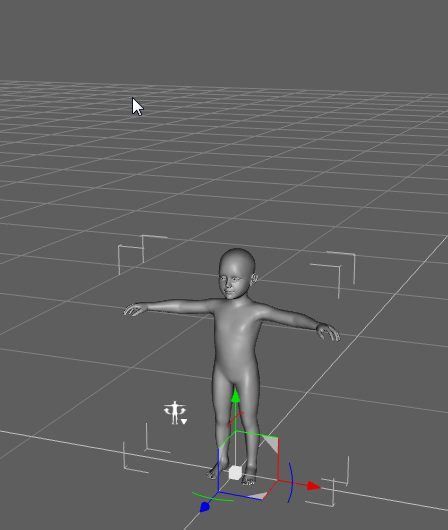
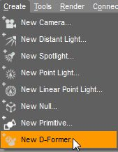
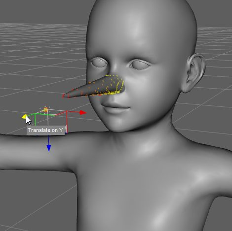
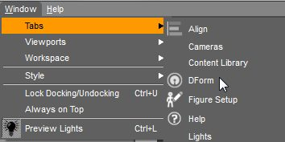
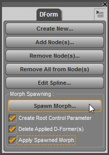

ជំពូក ៤ — Shaping (កែរូបរាង)
បកប្រែពី៖ IV — Shaping · Customizing Your Figures
ដើម្បីឱ្យឆាករបស់អ្នកមានលក្ខណៈពិសេស អ្នកនឹងចង់បត់បែន រូបរាង នៃតួ និងវត្ថុរបស់អ្នកដោយប្រើ morphs។
តើ «Shaping» និង «Morph» ជាអ្វី?
«Shaping» = ពាក្យសម្រាប់ដំណើរការប្ដូររូបរាងវត្ថុក្នុង Daz Studio
«Morph Target» ឬ «Morph» = ផ្ទុកព័ត៌មានសម្រាប់ vertex នីមួយៗនៃវត្ថុ 3D និងរបៀបដែលវាផ្លាស់ទីធៀបនឹងគ្នាពេល morph ត្រូវបានអនុវត្ត
សំណាងល្អ Daz Studio គិតគណនាស្មុគស្មាញទាំងអស់ជំនួសអ្នក ហើយបង្ហាញ morphs ជា sliders ក្នុងផ្ទាំង Shaping — អ្វីដែលអ្នកត្រូវធ្វើគឺអូស slider ប៉ុណ្ណោះ។
Note
ជំពូកនេះប្រើ layout Hollywood Blvd និង Activity 'Actors, Wardrobe & Props'។ ការជ្រើសឆាកបច្ចុប្បន្នសំខាន់ណាស់ (ដូចគ្រប់កន្លែងក្នុង Daz Studio) — ត្រូវជ្រើសវត្ថុក្នុងផ្ទាំង Scene មុននឹង shaping។
ផ្ទាំង Shaping
ផ្ទាំង Shaping គឺជាមជ្ឈមណ្ឌលសម្រាប់បត់បែនរូបរាង — អ្នកអាចប្ដូរតួពីកូនក្មេងតូចទៅជាយុទ្ធជនក្លាហាន ពី troll យក្សទៅជាស្ត្រីតូចស្រស់។ ផ្ទាំងស្ថិតនៅខាងឆ្វេង (Hollywood Blvd) ហើយមាន ២ pages៖ Editor និង Presets។
Page Editor
រៀបចំស្រដៀងផ្ទាំង Parameters៖
ជួរឆ្វេង — បញ្ជី regions របស់តួ/វត្ថុដែលជ្រើស (បើមាន) · បើគ្មាន regions បង្ហាញ property groups ជំនួស។ ពង្រីក/បង្រួមដោយចុចព្រួញ — ជ្រើស region/group ផ្សេង នឹងប្ដូរលក្ខណៈសម្បត្តិដែលបង្ហាញ
ជួរស្ដាំ — morph sliders ជាក់ស្ដែង។ Morphs ទាំងអស់ក្នុង region ដែលជ្រើសលេចនៅទីនេះ — អូស handle នៃ slider ដើម្បីអនុវត្ត morph ឬចុចរូបភាពតំណាង nudge នៅចុង slider ឬចុចលើតម្លៃលេខ រួចវាយលេខផ្ទាល់ខ្លួន
Scene Selection Menu (ម៉ឺនុយធ្លាក់ចុះខាងលើឆ្វេង) — ប្ដូរការជ្រើសដោយមិនចេញពីផ្ទាំង។ ដូចផ្ទាំង Scene ប៉ុន្តែបង្ហាញតែវត្ថុមាន geometry (កាមេរ៉ា និងពន្លឺត្រូវបានច្រោះចេញ)
Filters — «All» = លក្ខណៈសម្បត្តិ shaping ទាំងអស់ · «Currently Used» = តែលក្ខណៈសម្បត្តិដែលបានប្ដូរពីតម្លៃលំនាំដើម (កំពុងប្រើប្រាស់ជាក់ស្ដែង)
Page Presets
កន្លែងផ្ទុក Shaping Presets — preset ផ្ទុកព័ត៌មាន morphs របស់តួ ដូច្នេះពេលអនុវត្ត តួនឹងប្លែងទៅជារូបរាងដែល preset កំណត់ (លុះត្រាតួមាន morphs ដែលត្រូវការ)។
Page នេះដំណើរការដូច Smart Content៖ Category View នៅខាងឆ្វេង · Asset View នៅខាងស្ដាំ — ចុចពីរដងលើរូបភាពតំណាងដើម្បីផ្ទុក preset។
Note
Daz Studio មិនភ្ជាប់ Shaping Presets ឥតគិតថ្លៃសម្រាប់ Genesis/Genesis 2 ទេ ប៉ុន្តែតួទាំងពីរមាន morphs មូលដ្ឋានមួយចំនួនរួចហើយ — សាកល្បងមើលតាម regions ផ្សេងៗ ដើម្បីដឹងថា morphs ស្ថិតនៅឯណា។ Morphs បន្ថែមអាចទិញបានពី DAZ 3D Store (ឧ. Genesis Evolution: Morph Bundle, Genesis 2 Female(s) Morphs Bundle)។
រក្សាទុក Shaping Preset ផ្ទាល់ខ្លួន
ជ្រើសវត្ថុដែលចង់រក្សាទុក (ការជ្រើសឆាកបច្ចុប្បន្ន)
File > Save As… > Shaping Preset… → ផ្ទាំងសន្ទនា «Filtered Save» — ដាក់ឈ្មោះ ជ្រើសទីតាំង រួចចុច Save (ចាំទីតាំងឱ្យបាន!)
ផ្ទាំងសន្ទនា «Shaping Preset Save Options» លេចឡើង៖
ខាងលើ៖ ជ្រើសរួមព័ត៌មានសម្រាប់ frame បច្ចុប្បន្ន ឬព័ត៌មាន animated លើ frames ច្រើន
«Properties View» — ពង្រីកវត្ថុ → property groups → subgroups → លក្ខណៈសម្បត្តិនីមួយៗ។ អ្វីដែល ធីក នឹងត្រូវរួមក្នុង preset (ដកធីកដើម្បីដកចេញ)
«File Options» — ជម្រើស compress ឯកសារ (ធីកជាលំនាំដើម — សន្សំកន្លែងថាស)។ អ្នកប្រើកម្រិតខ្ពស់អាចទុក uncompressed ដើម្បីកែក្នុង text editor ពេលក្រោយ
ចុច Accept
ពេលក្រោយ ផ្ទុក preset វិញបានពី page Presets នៃផ្ទាំង Shaping — ជ្រើសវត្ថុសិន រួចចុចពីរដង ឬអូសទម្លាក់រូបភាពតំណាងលើវត្ថុ។
ឧទាហរណ៍ជាក់ស្ដែងពីឯកសារផ្លូវការ — ការបង្កើត Morph
រូបភាពខាងក្រោមបង្ហាញលំហូរការងារនៃការបង្កើត Morph ផ្ទាល់ខ្លួន (ពីមគ្គុទ្ទេសក៍ Create Morph របស់ DAZ 3D)៖


ជំហានទី ១ — ការរៀបចំតួសម្រាប់បង្កើត Morph · រូបភាពពីឯកសារផ្លូវការ DAZ 3D


ជំហានទី ២ — ការកែរូបរាងនៅកម្មវិធីខាងក្រៅ · រូបភាពពីឯកសារផ្លូវការ DAZ 3D


ជំហានទី ៣ — ការនាំចូលឡើងវិញ និងបង្កើត Morph Target · រូបភាពពីឯកសារផ្លូវការ DAZ 3D


ជំហានទី ៤ — ការកំណត់លក្ខណៈសម្បត្តិ Morph · រូបភាពពីឯកសារផ្លូវការ DAZ 3D


ជំហានទី ៥ — លទ្ធផលចុងក្រោយក្នុងផ្ទាំង Shaping · រូបភាពពីឯកសារផ្លូវការ DAZ 3D
Render លទ្ធផល
តួរបស់អ្នកត្រូវបានឆ្លាក់ និងកែរូបរាងរួចរាល់ — ដល់ពេលបង្ហាញមិត្តភ័ក្ដិ! តម្រង់កាមេរ៉ាដោយប្រើ camera controls ដើម្បី framing ឆាកតាមចិត្ត រួចចុច Ctrl + R (PC) ឬ Cmd + R (Mac) ដើម្បី Render ដោយប្រើការកំណត់លំនាំដើម។ ចប់ហើយ ដាក់ឈ្មោះ និងរក្សាទុក។
Tip
ជំពូកបន្ទាប់ — ជំពូក ៥ Posing — នឹងពន្យល់ពីការបង្កើតកាយវិការតួ។